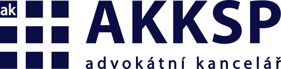
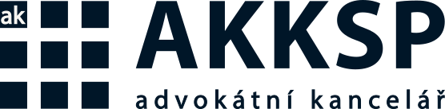

AKKSP advokátní kancelář · vizuální identita webu · verze 1 · 2026
Klidná jistota na hranici dvou zemí.
Jeden systém pro celý web: švýcarský řád mřížky a typografie, teplo papíru a dřeva z kanceláře, sklo a světlo jen tam, kde je pod ním fotka. Vychází z výběru variant v moodboardu, sjednoceného tak, aby celek mluvil jedním hlasem.
12sloupcová mřížka, číslované sekce, mono štítky. Vše zarovnané vlevo, nic náhodně.
Modul z loga (mřížka 3×3). Čtverečky v štítcích, šipkové moduly, 9 oblastí. Rohy téměř ostré.
Krémový papír, inkoustová modř, zlatá jen jako světlo. Vlastní fotky, žádné fotobanky.
Česko a Polsko rovnocenně: přepínač CZ / PL v hero, polština jako plnohodnotná verze.
01 · Logo
Logo a jeho prostor
Logo je mřížka devíti čtverců s „ak" a wordmark AKKSP. Nemění se, jen se volí barevná mutace podle podkladu.

akksp-logo-ink.svg · na krémové
akksp-logo-navy.svg · na papíruOchranná zóna a velikost
Kolem loga zůstává volný prostor o velikosti jednoho čtverce mřížky (oranžový čtverec). Minimální šířka na webu 96 px, v tisku 25 mm. V navigaci 116 px, v patičce 136 px.
- Bílá mutace na navy a na tmavých fotkách
- Inkoustová nebo navy mutace na krémové a papíru
- Nedeformovat, neotáčet, nepřidávat stíny ani přechody
- Neumisťovat na neklidnou část fotky bez navy překryvu
- Nepoužívat zlatou mutaci jako hlavní logo (jen speciální tisk)
02 · Barvy
Papír, inkoust a navy ostrovy
Přesné odstíny z konceptu. Web je světlý (krémová a papír), tmavé navy sekce střídají rytmus, zlatá je světlo, ne plocha.
Kontrast (WCAG 2.2)
| Ukázka | Popředí / pozadí | Poměr | Použití |
|---|---|---|---|
| Inkoust na krémové | nadpisy, text | ||
| Text na papíru | běžný text | ||
| Papír na navy | text na tmavé | ||
| Zlatá na navy | akcent, štítky | ||
| Navy na zlaté výplni | primární tlačítko | ||
| Zlatá linka na krémové | jen dekor, nikdy text |
03 · Typografie
Source Serif 4 · IBM Plex
Knižní serif pro nadpisy, Plex Sans pro text, Plex Mono pro štítky, čísla a data. Vše SIL Open Font License, hostováno lokálně.
Serif 600 · 44–76 px
lh 1.02 · −0,025 em
Právní partner v Česku a Polsku.
Serif 600 · 36–52 px
lh 1.06 · −0,02 em
S čím vám pomůžeme?
Serif 600 · 24–30 px
Předání firmy nové generaci: Jak úspěšně naplánovat nástupnictví
Sans 600 · 18–20 px
Přeshraniční podnikání (CZ / PL)
Sans 400 · 17–19 px · lh 1.6
Komplexní právní podpora pro firmy, podnikatele i jednotlivce. Srozumitelně, spolehlivě a s důrazem na praktická řešení.
Sans 400 · 16 px · lh 1.6
Vlastník firmy obvykle dokáže přesně popsat zákazníky, výrobní procesy i finanční plán. Zażółć gęślą jaźń · Příliš žluťoučký kůň úpěl ďábelské ódy.
Mono 500 · 12 px · +0,1 em
VERZÁLKY + čtvereček
02 · Oblasti naší právní pomoci
Mono 400 · 12 px
01 / 09 · 49°41′ N · Nástupnictví · díl 3
04 · Mřížka a rozestupy
Švýcarská mřížka, čtverec z loga
12 sloupců, max. šířka 1320 px, mezera 24 px, okraj 20–64 px. Hlavičky sekcí: štítek ve sloupcích 1–3, nadpis 4–9, akce 10–12.
Rozestupy
Vertikální odsazení sekcí: 64–128 px fluidně. Uvnitř karet 24–32 px.
Modul 3×3
Čtverec z loga se vrací jako štítkový čtvereček (8 px), šipkový modul tlačítka (48 px), „+" v oblastech (40 px) a jako mřížka 9 oblastí právní pomoci. Zlatý střed = Třinec.
05 · Tvary a povrchy
Tři povrchy, každý na svém místě
Rohy 2 px (ovládací prvky, dlaždice) a 4 px (karty, sklo). Žádné pilulky ani velká zaoblení.
Reference, aktuality. 1px linka, na hover ztmavne.
Jen čísla „Proč AKKSP" na krémové. Vždy s 1px okrajem.

Jen nad fotkou s navy překryvem.
/* Sklo */ background: rgb(250 248 244 / .08); border: 1px solid rgb(250 248 244 / .18); backdrop-filter: blur(18px) saturate(140%); box-shadow: inset 0 1px 0 rgb(255 255 255 / .16); /* Pod sklem vždy */ fotka + překryv rgb(0 22 40 / .72) · max. 1 vrstva skla na obrazovku · prefers-reduced-transparency → plná navy /* Reliéf */ 8px 8px 20px rgb(10 14 69 / .08), −8px −8px 20px #FFFDFA + inset 1px okraj · zamáčknuto = inset stíny + písek
06 · Komponenty
Tlačítka, přepínače, karty
Tlačítko = text + čtvercový šipkový modul. Jedno primární tlačítko na obrazovku.
| Prvek | Pravidla | Stavy |
|---|---|---|
| Primární tlačítko | zlatá výplň, šipkový modul tmavší zlatou; Sans 600 15 px; výška 48 (40 v navigaci) | hover: modul jantar + šipka 3 px vpravo · active: posun 1 px · fokus: 2px jantarový obrys |
| Sekundární | 1px obrys (inkoust 44 % / zlatá 40 % na navy), modul oddělen linkou | hover: jemná výplň 8 % |
| Textový odkaz | Mono verzálky 13 px + šipka | hover: zlatá linka pod textem se natáhne zleva |
| „+ → ×" | čtverec 40 px, dvě čáry 14 px; <button aria-expanded> | otevřeno: zlatá výplň + rotace 45° (500 ms) |
| Štítek | Mono 12 px verzálky, čtvereček 8 px; „číslo · název" | — |
Pomůžeme vám
- sepsat smlouvu
- vyjednat smlouvu
Právní jistota v klíčových životních situacích.
let zkušeností v právním poradenství
Reliéf jen na krémové
07 · Fotografie a ikony
Vlastní lidé, vlastní prostor
Jen fotky z kanceláře a týmu. Tři úpravy podle místa, žádné fotobanky.


Pravidla
- Portréty jednotně: teplé dřevo v pozadí, výřez od pasu, oči v horní třetině
- Interiér: detaily (brýle, stůl, schodiště s cedulí AKKSP) jako příběh kanceláře
- Chybí: fotky ze školení, z Krakova a Prahy, rukou při práci s dokumenty
- Fotobanky, ilustrační „podání rukou", kladívka a váhy spravedlnosti
- Text přímo na fotce bez překryvu
Ikony
Tah 1,5 px, zakončení kulatá, mřížka 24 px; styl Phosphor Regular (licence MIT). Ikona nikdy nenese význam sama, vždy s textem nebo aria-label.
08 · Pohyb
Přesné odkrytí, nic navíc
Pohyb potvrzuje akci nebo uvádí sekci. Jednou, krátce, bez smyček a paralaxy.
| Situace | Pohyb | Délka | Křivka |
|---|---|---|---|
| Nadpis sekce | maska zleva doprava (clip-path) | 500 ms | cubic-bezier(0.76, 0, 0.24, 1) |
| Karty, dlaždice | opacity + posun 16 px, rozestup 60 ms | 600 ms | cubic-bezier(0.22, 1, 0.36, 1) |
| Hover | barva / šipka 3 px / zvednutí 4 px | 250 ms | stejná |
| „+ → ×", menu ☰ → × | rotace 45° + výplň | 500 ms | stejná |
| Fotky | černobílá → barva, měřítko 1,02 | 700 ms | stejná |
| Omezení pohybu v systému | vše bez pohybu, obsah hned viditelný | — | — |
09 · Tón a přístupnost
Mluvíme jako dobrý advokát u stolu
Věcně, lidsky, bez mlhy. Konkrétní situace místo obecných slibů.
„Pomůžeme vám, když vám zákazník neplatí."
„Nebudete čekat ani na telefon, ani na schůzku, ani na naši práci."
„Poskytujeme komplexní řešení v oblasti vymáhání pohledávek na nejvyšší úrovni."
„Jsme lídrem v oblasti práva."
Psaní
- Nadpisy a tlačítka větou, ne VERZÁLKAMI (verzálky jen mono štítky)
- Tlačítko = sloveso + co dostanu („Kontaktovat nás", „Zobrazit nabídku školení")
- Česky „ “ uvozovky, polsky „ ”; pevné mezery za předložkami
- Čísla jen ověřená (délka praxe, počet lidí)
Přístupnost
- Kontrast AA (viz kapitola Barvy)
- Celý web ovladatelný klávesnicí, viditelný fokus
- „Přejít k obsahu", sémantické nadpisy, alt texty
- Respektujeme omezení pohybu a průhlednosti v systému